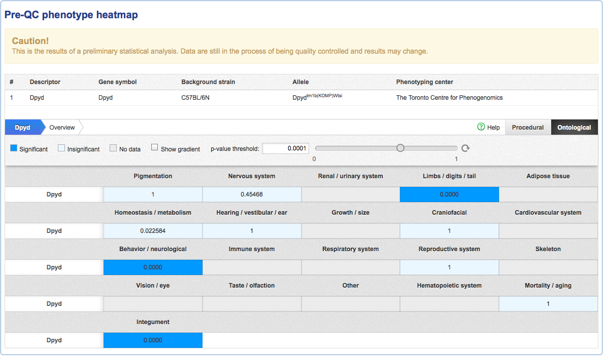

Gene Page Documentation
Gene Details
The gene details section of the page shows information about the gene. The information displayed includes:
- Name
- Synonyms
- MGI ID which links to the corresponding gene detail page at Mouse Genome Informatics
- The latest IMPC production status for this gene. This aggregates the statuses of all ongoing projects for this gene in iMits and displays the status of the project that is closest to producing a mouse.
- Links to different view of the gene in the Ensembl genome browser: Gene view links to the browser centered on the gene, Location view links to a view of the chromosome, Compara view links to the Ensembl compara view for this gene
- ENU link to the ENU mutant library at the Australian Phenomics Facility

Gene Browser
By clicking the Gene Browser link, a genome browser will be shown displaying a graphical view of the gene's location and surrounding features. The browser is interactive and you can use your mouse to zoom and scroll.

Gene Phenotypes
The gene phenotypes section of a gene page shows the association of genes to Mammalian phenotype terms.

Gene Phenotype Summary
A summary of phenotype terms for this gene with associated counts. The counts indicate the number of unique combinations of:
- Phenotype term
- Allele
- Zygosity
- Sex
- Procedure/Parameter
- Phenotyping center
- Analysis - project that asserted the association
- Graph link
Due to this combining process, the number of rows in the results table may not equal the count shown. Also, be aware that MP terms may have more than one high level parent and so the counts in the summary may not equal the total number of entries.

The icons on the right hand side show a visual summary of the same data. Blue icons can be clicked to filter the table.
Gene Phenotype Table
The phenotype table lists the individual phenotypes associated to this gene through a specific allele. If both sexes are associated, then both are shown on the same row indicated by the male / female icons ( ).
).

Gene Phenotype Filtering
The results shown in the phenotype table may be filtered using the dropdown filters. Select the check boxes to include entries pertaining to the selection. The displayed rows are the result of logically ORing within and logically ANDing between dropdowns.

Gene Ohenotype Download
The results in the table may be downloaded for further processing. The resulting download respects all filters that have been applied to the data.
We offer 2 export options for the data in the table:
- TSV, text file with tab separated variables
- XLS, Microsoft Excel spread sheet
In the table displayed on our page entry lines are collapsed based on sex. That is, if for 2 lines all fields are identical except the gender, they will be shown together for a better user experience. In the export file however we export all lines separately, to allow easier further processing of the data. This holds for both XLS and TSV files.
Pre-QC Phenotype Heatmap
When there is data available, but not yet complete, from the IMPC resource, the Pre-QC panel will appear. The pre QC panel shows a heatmap of the results of preliminary analysis on data that has been collected by the IMPC production centers to date, but is not yet complete. In order to be marked Complete, 7 males and 7 females must complete all core screens required by the IMPC pipeline.
Please visit the comprehensive heatmap documentation for more information about the heatmap.
Please visit the IMPReSS website for more information about the IMPC pipeline.
NOTE: Use this analysis with caution as the analysis is likely to change when more data becomes available.
Gene Phenotype Images
The phenotype images section shows all the images associated to this gene via direct annotation from the image source. Currently all images are courtesy of the Sanger Mouse Genetic Project.
NOTE: This is a work in progress. Images may depict phenotypes not statistically associated with a mouse strain.

Gene Expression Images
The expression images section shows all the expression images associated to this gene via direct annotation from the image source. Currently all images are courtesy of the Sanger Mouse Genetic Project.
NOTE: This is a work in progress. Images may depict phenotypes not statistically associated with a mouse strain.

Order Mouse and ES Cells
The alleles and ES cells section describes the mutations available from the IKMC resource. Each row corresponds to an allele of this gene. A diagram is included depicting the mutation the allele carries.
The links in the Order column will take you to the purchase place of the ES cell or mouse when available.
The genbank file link points to a genbank file describing the genomic sequence of the allele.